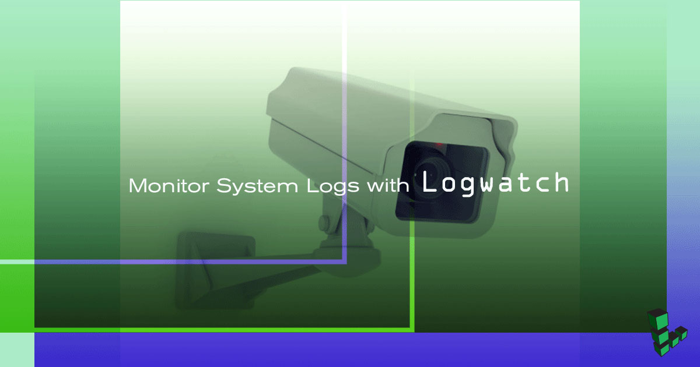

Monitor System Logs with Logwatch
Updated by Elle Krout Written by Elle Krout

Logwatch is a log parsing program that analyzes and generates daily reports on your system’s log activity. Logwatch does not provide real time alerts, but instead will create a digest organized by systems for ease of review. More advanced users can also pair Logwatch with custom analysis scripts to fine-tune their reports.
By default, Logwatch uses Sendmail to send digests.
NoteThe steps required in this guide require root privileges. Be sure to run the steps below as root. If logged in as a superuser, it is recommended that yousuinto root. For more information on privileges see our Users and Groups guide.
Install Logwatch and Sendmail
Arch Linux
Update your system:
pacman -SyuInstall Logwatch and Postfix, to replace the default Sendmail, which is not in Arch’s repositories.
pacman -S logwatch postfixLogwatch will prompt you to select which cron provider to use. Select the default, cronie.
Note
Other SMTP clients can also be used for delivering Logwatch messages.Edit the
/etc/postfix/main.cffile to add your domain information, and allow for send-only mail, replacinghostname.example.comwith your own hostname and domain:- /etc/postfix/main.cf
-
1 2myhostname = hostname.example.com inet_interfaces = loopback-only
Note
Both A/AAAA, and MX records will need to be set for your domain.Edit
/etc/postfix/aliasesto uncommentrootand alias it toroot@hostname.example.com, replacinghostname.example.comwith your own hostname and domain:- /etc/postfix/aliases
-
1root: root@hostname.example.com
Run
newaliasesafter editing the aliases list.Start postfix:
systemctl start postfix
CentOS 7
Update your system:
yum updateInstall Logwatch and Sendmail:
yum install logwatch sendmailStart Sendmail:
systemctl start sendmail
Debian
Update your system:
apt-get update && apt-get upgradeInstall Logwatch and Sendmail:
apt-get install logwatch sendmail-bin sendmail
Fedora
Update your system:
dnf updateInstall Logwatch and Sendmail:
dnf install logwatch sendmailStart Sendmail:
systemctl start sendmail
Ubuntu
Update your system:
apt-get update && apt-get upgradeInstall Logwatch and Sendmail:
apt-get install logwatch sendmail
Configure Logwatch
The default configuration file for Logwatch is located at /usr/share/logwatch/default.conf/logwatch.conf. This file contains information on which directories for Logwatch to track, how the digest is output, where the digest is sent to, and which services of which to keep track.
The following settings are the most comment configuration changes that will need to be made. Others can be found in the logwatch.conf file, explained in the comments.
NoteIf Logwatch initially does not appear to run, within thelogwatch.conffile, change theDetailssetting toMed.
Log Directories
By default, Logwatch digests will include all logs contained within /var/log. If any other directories contain logs, such as website directories, they can be added by including additional LogDir lines. For example:
- /usr/share/logwatch/default.conf/logwatch.conf
-
1 2LogDir = /var/log LogDir = /var/www/example.com/logs
Print Logwatch Digest to Console
The default Logwatch configuration will output the digest to your Linode’s console. This is defined with the Output variable, which is set to stdout by default. This option is feasible if you are only planning on manually running Logwatch, but does not save or send the logs to you for later perusal.
Email Logwatch Digest
The Logwatch digest can be sent to local users or external email addresses, in plain text or HTML formats.
NotePrior to sending mail externally or locally ensure you have Sendmail installed on the Linode. If you choose to use a different MTA client, change the
mailerline in the Logwatch configuration file to contain the directory of your chosen MTA, or alias/usr/sbin/sendmailto your MTA.If using Arch, and you followed the above install instructions, Sendmail is already aliased to msmtp.
Change the
Outputvalue tomail. If you wish to receive the messages in HTML format change theFormatvalue tohtml.Change the
MailToaddress to a valid email address, or local account user. For example, to send mail to therootuser change the line to read:- /usr/share/logwatch/default.conf/logwatch.conf
-
1MailTo = root
Change the
MailFromvalue to a valid email address, or to a local user. This can also be left asLogwatch.
Save Logwatch Digest to File
Logwatch digests can also be saved to a file on your system.
Change the
Outputvalue tofile.Find and uncomment (remove the hashmark [#]) the
Filenamevalue. Set the path and filename in which you wish to save your Logwatch digests.
Run Logwatch
Run Logwatch Manually
Logwatch can be run manually at any time by inputting the logwatch command to your console. This command can be appended with a number of options to change the default output to suit your needs:
--detail: Can be set to low, med, high, or any numerical values between 1 and 10. Defines how detailed the report will be.--logdir: The directory containing the log files you wish to gain reports on.--service: The service definition that you wish to report on.--output: How you want the file to be sent: Standard output (stdout), mail, or file.--format: Plain text or HTML.--mailto: The local user or email address to send the report to.
Run Logwatch through Cron
Logwatch often works best when configured to run daily and send or save a report to view later. This can be achieved by setting Logwatch up to run as a cronjob.
Open the crontab:
crontab -eAdd a line for Logwatch. The following code is configured to run at 00:30 each day:
- /etc/crontab
-
130 0 * * * /usr/sbin/logwatch
For more information on adjusting your crontab scheduling, reference our guide on Scheduling Tasks with Cron.
Join our Community
Find answers, ask questions, and help others.
This guide is published under a CC BY-ND 4.0 license.